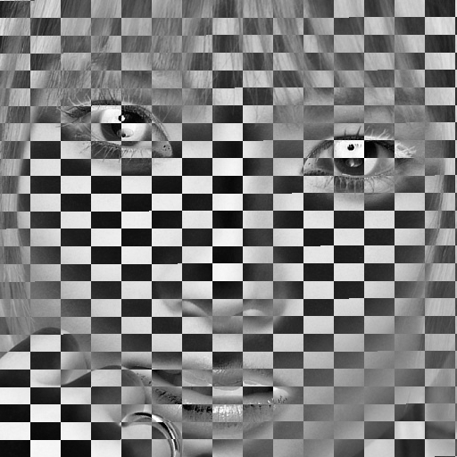

Feuille 3
Contents
4. Feuille 3#
Note
Feuille téléchargeable au format jupyter notebook (.ipynb)
Le symbole \(\blacksquare\) indique les exercices ou questions obligatoires. Commencez pas ceux-là.
Les symboles \(\star\) et \(\star\star\) indiquent les exercices ou questions de difficulté relative plus importante.
Focus
tableaux 2D et traitements associés : images, matrices
boucles imbriquées
fonctions avec tableaux multi-dimensionnels
Compétences
Savoir représenter un tableau multidimensionnel comme une liste de listes : initialisation, accès aux valeurs, à des tranches de valeurs
Savoir exploiter une structure de contrôle composée de type boucles imbriquées indépendantes et dépendantes : intérêt, exemples de parcours simple ou conditionnel, décompte des itérations.
Savoir définir et écrire une spécification de fonction avec des paramètres de type tableau
Identifier les cas particuliers liés à la structure de tableau : tableau de dimension 0, tableau vide
Rappel de quelques consignes
Les fonctions avec un ou plusieurs arguments de type tableau (
lst,str) doivent expliciter la (ou les) dimensions de chacun de ces arguments tableaux à l’aide des arguments supplémentaires nécessaires.
4.1. Objectif 10#
Important
Pour tous les exercices, il est fortement conseillé de suivre les étapes suivantes.
Ecrire d’un algorithme qui répond à la question. Cette étape peut être optionnelle selon votre niveau.
Ecrire cette solution sous la forme d’un appel de fonction – ce qui suppose l’écriture préalable de la fonction.
Valider la fonction avec quelques tests unitaires bien choisis. Les ES avec des fichiers sont utiles à cet effet.
4.1.1. \(\blacksquare\) Exercice.#
Écrire un algorithme qui calcule les tables de multiplications entre entiers compris en 1 et 10, les stocke dans un tableau 2D puis les affiche. Ainsi la case \((i,j)\) du tableau contient le résultat de \(i \times j\).
4.1.2. \(\blacksquare\) Exercice.#
Ecrire les algorithmes de vérification suivants pour une matrice \(M\) donnée, carrée de taille \(n\) et à valeurs flottantes.
\(M\) est diagonale ?
\(M\) est symétrique ?
\(M\) est égale à l’identité ?
\(M\) est l’inverse d’une autre matrice donnée \(N\) ?
4.1.3. \(\blacksquare\) Exercice.#
Ecrire les algorithmes des traitements suivants pour une matrice \(M\) donnée, carrée de taille \(n\) et à valeurs flottantes.
Générer, puis afficher, la matrice transposée de \(M\).
Générer la matrice symétrique à partir de la partie triangulaire supérieure de \(M\).
Calculer les opérations matricielles suivantes en veillant à la cohérence des dimensions :
addition de matrices : \(A+B\),
produit matrice-vecteur : \(A \cdot U\),
produit de matrices : \(A \times B\).
Compter le nombre d’opérations arithmétiques de ces traitements. Exprimer ce nombre comme une fonction de \(n\). Qu’en déduire si la taille \(n\) est doublée ?
4.1.4. \(\blacksquare\) Exercice#
Note. Cet exercice est inspiré d’un extrait de sujet d’examen. Il comporte des questions Objectifs 10 et Objectif 20.
Une image 2D peut être représentée par un tableau 2D de pixels.
Une image “noir et blanc” de taille \(L \times C\) est ainsi représentée
par un tableau de \(L\) lignes et \(C\) colonnes, de 0 (pixel blanc) ou de
1 (pixel noir).
Les images suivantes sont des exemples d’images 3 \(\times\) 4.
{kind=link}
{kind=link}
{kind=link}
L’image blanche (à gauche) est représentée par le tableau de taille \(3 \times 4\) (une liste de listes de 0) donné par le code python suivant.
l = 3
c = 4
t = [[0 for i in range(c)] for j in range(l)]
print(t)
print(len(t), len(t[0]))
[[0, 0, 0, 0], [0, 0, 0, 0], [0, 0, 0, 0]]
3 4
Premières transformations d’images 3 \(\times\) 4.#
Ecrire l’algorithme qui transforme l’image blanche (à gauche) en une image noire 3 \(\times\) 4 sans définir un autre tableau.
Ecrire l’algorithme qui transforme l’image blanche en l’image du centre.
Ecrire l’algorithme qui transforme l’image blanche en l’image de droite.
Fonctions et transformation d’image de taille arbitraire.#
On considère la dernière transformation où la partie triangulaire inférieure est noircie. Selon la forme de la matrice, cette partie noircie est un triangle (matrice rectangulaire “allongée” horizontalement) ou un trapèze (matrice rectangulaire “allongée” verticalement). On va définir cette transformation sous la forme d’une fonction.
Ecrire l’en-tête de cette fonction
tr()Appliquer cette fonction à l’image blanche de gauche.
Ecrire le corps de la fonction
tr().(\(\star\)) Définir une image
t2de taille 4 \(\times\) 8 composée de lignes alternativement blanche et noire
On applique la fonction
tr()à cette image. Dessiner “à la main” l’image ainsi transformée.Ecrire ce traitement à l’aide de la fonction
tr()
Analyse d’une image de taille arbitraire.#
Ecrire une fonction
nbpixblc()qui compte et retourne le nombre de pixels blanc d’une image de taille arbitraireQue retourne l’application de cette fonction à l’image (4) de la question [que:im4].
(\(\star\)) Complexité de cette analyse#
Préciser le paramètre de complexité de
nbpixblc(), la mesure de cette complexité et l’expression la plus précise possible de sa complexité. Justifier votre réponse.Soit \(C\) la complexité du traitement par
nbpixblc()d’une image donnée \(\mathcal{I}\). On double le nombre de lignes de \(\mathcal{I}\). Quelle est la complexité \(C_1\) du traitement de cette nouvelle image ?On double le nombre de lignes et de colonnes de \(\mathcal{I}\). Quelle est la complexité \(C_2\) du traitement de cette nouvelle image.
Donner l’expression la plus précise possible de sa complexité asymptotique.
4.2. Objectif 20#
4.2.1. \(\blacksquare\) Exercice.#
Calculer, puis afficher, les 15 premières lignes du triangle de Pascal. Veiller à séparer traitement et affichage.
4.2.2. \(\blacksquare\) Exercice.#
On veut résoudre le système linéaire \(Tx=b\) où la matrice \(T\) est une matrice triangulaire inférieure carrée de taille \(n\) et \(b\) un vecteur second membre (de taille \(n\)). La matrice \(T\) et et le vecteur \(b\) sont supposés donnés (au clavier ou avec une valeur d’initialisation).
Ecrire l’algorithme qui effectue ce traitement.
Le transformer en une fonction et un appel équivalent.
4.2.3. \(\blacksquare\) Exercice.#
De façon similaire à l’exercice, on définit des images à
niveaux de gris par un tableau 2D d’entiers compris en 0 (noir) et 255
(blanc). La taille de l’image \(L \times C\) est arbitraire.
Ecrire les algorithmes des traitements suivants. On pourra commencer en
introduisant un tableau supplémentaire pour l’image transformée. Selon
les cas, on essaiera ensuite une solution “en place” : la transformation
s’effectue sur le tableau de l’image d’origine.
Générer le négatif (reverse video) d’une image NB ou par niveaux de gris.
Générer une image NB à partir d’une image niveau de gris.
Augmenter le contraste de la transformation précédente.
Principe : fixer un seuil et remplacer les pixels plus clairs que le seuil par des pixels blancs, et inversement les plus sombres que le seuil par des pixels noirs.Générer une image miroir vertical (le haut se retrouve en bas et réciproquement) ou horizontal d’une image NB.
Augmenter la luminosité (ou luminance) d’une image à niveau de gris.
Principe : ajouter ou retrancher une constante de la valeur des pixels.Générer les contours significatifs d’une image.
Principe : on remplace par un pixel noir chaque pixel dont la variation des valeurs de ses 4 voisins varient au delà d’un certain seuil, sinon on le remplace par un pixel blanc.Réduire par 2 la taille d’une image à niveau de gris.
Principe : chaque carré de 2x2 pixels est remplacé par 1 pixel de valeur la moyenne des pixels du carré.
4.2.4. \(\star\) Exercice.#
Note. Les images de cet exercice sont disponibles sous moodle (section TD).
Ecrire les algorithmes qui, à partir de l’image originale suivante :
{kind=link}
génèrent des images zébrées horizontales ou verticales ou quadrillées.
{kind=link}
{kind=link}
{kind=link}
Le nombre de découpages horizontaux ou verticaux sont des paramètres de l’algorithme. On veillera aux cas où la taille de l’image n’est pas divisible par ces paramètres.